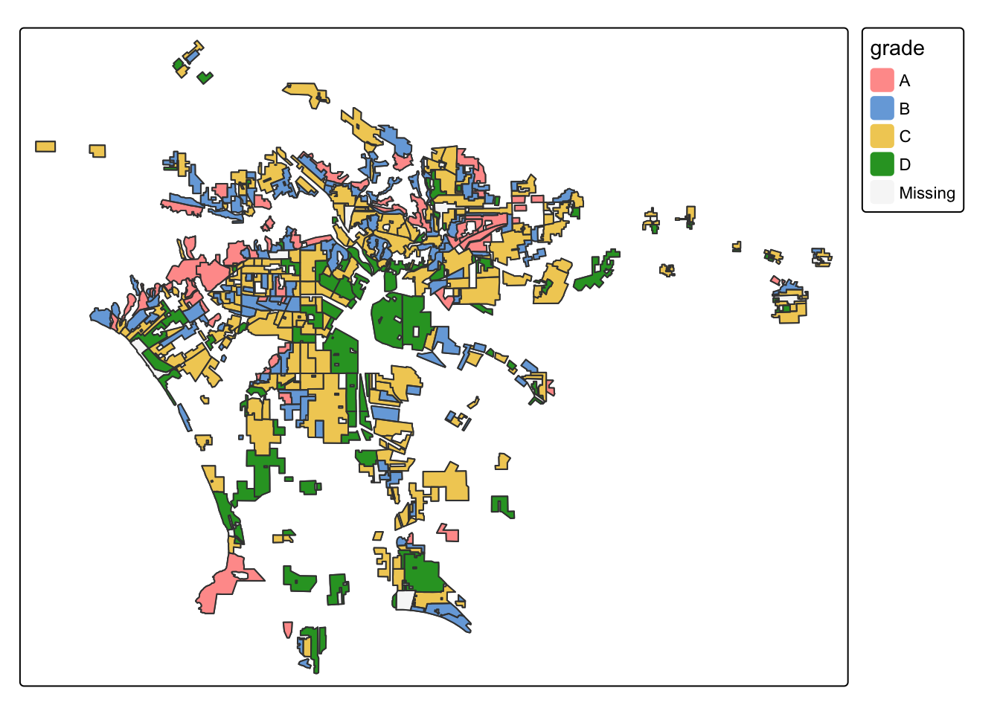
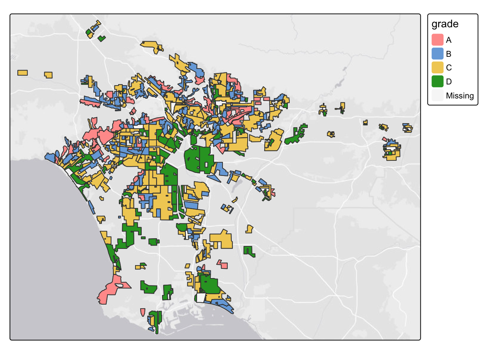
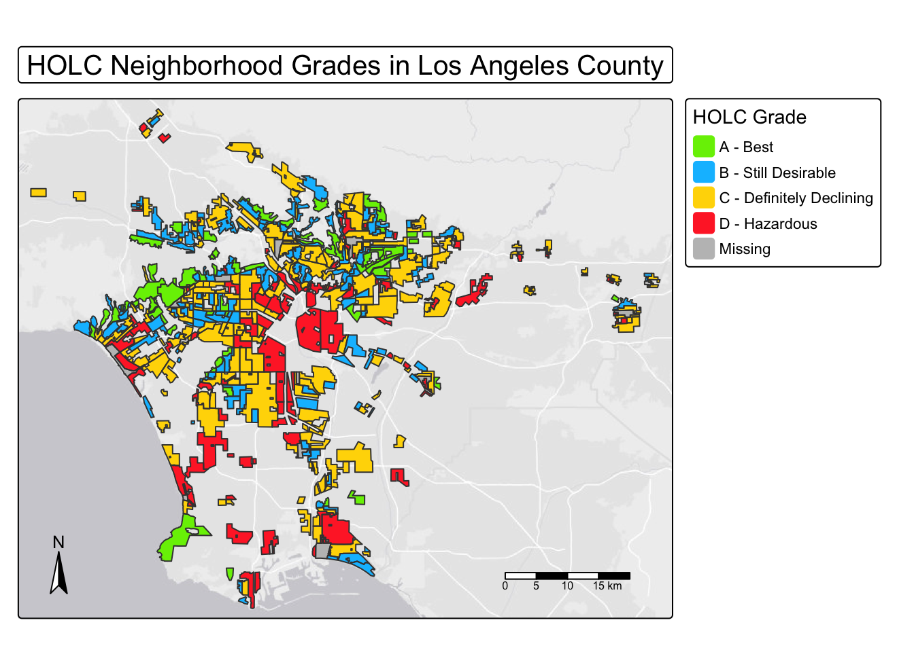
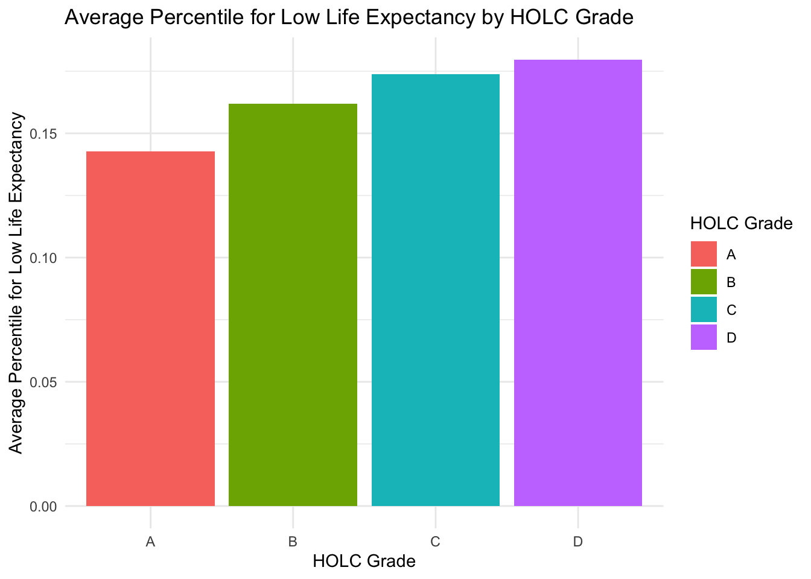
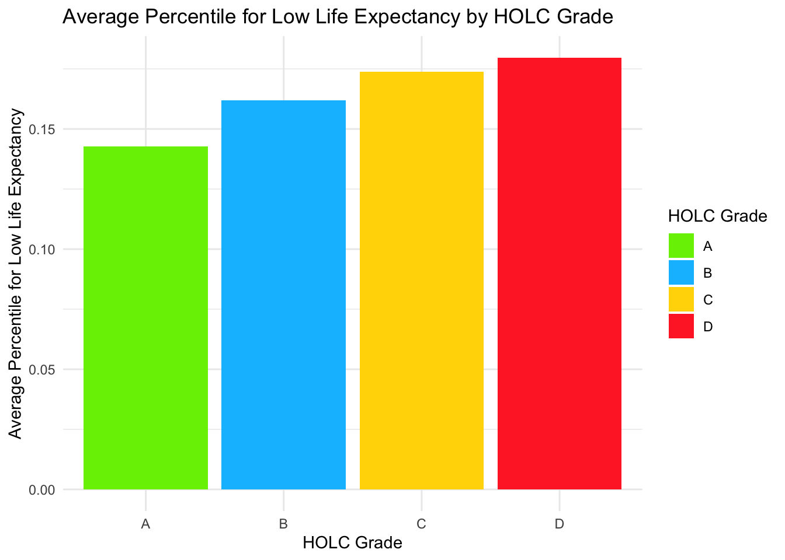
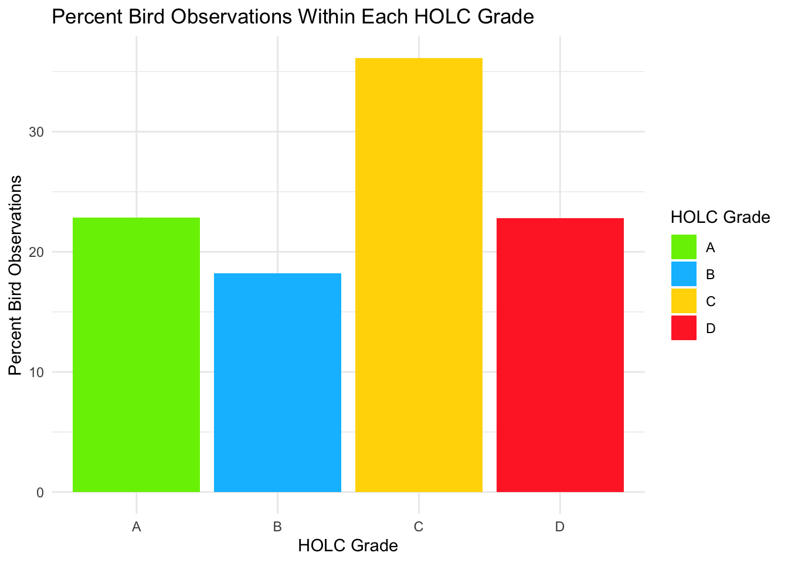

# Loading in Libraries
library(tmap)
library(here)
library(dplyr)
library(sf)
library(ggplot2)
library(kableExtra)Homework Assigment 2
The purpose of this script is explore the effects of historical redlining on present-day environmental and socioeconomic conditions as well as biodiversity observations in Los Angeles Country. We want to see how these conditions differ between HOLC Graded neighborhoods. This is executed using spatial data, and R packages such as tmap, ggplot2, and sf.
Part 1: Legacy of redlining in current environmental (in)justice
1. Create a map of historical redlining neighborhoods, including:
# Read in data
map_inequal <- st_read(here("data", "mapping-inequality", "mapping-inequality-los-angeles.json"), quiet = TRUE) # Add quiet = TRUE to get rid of informational output
ejscreen <- st_read(here("data", "ejscreen", "EJSCREEN_2023_BG_StatePct_with_AS_CNMI_GU_VI.gdb"), quiet = TRUE)
birds_la <- st_read(here("data", "gbif-birds-LA", "gbif-birds-LA.shp"), quiet = TRUE)Neighborhoods colored by HOLC grade
# Make a map showing neighborhoods colored by HOLC grade
tm_shape(map_inequal) +
tm_polygons() +
tm_fill("grade") +
tm_borders() 
An appropriate base map
# Make a map showing neighborhoods colored by HOLC grade and add a base map
tm_shape(map_inequal) +
tm_basemap() +
tm_polygons() +
tm_fill("grade") +
tm_borders()
A clear title and legend
# Make a map showing neighborhoods colored by HOLC grade and add a base map, title, and legend
tm_shape(map_inequal) +
tm_basemap() +
tm_fill("grade", title = "HOLC Grade", palette = c( # Assign custom colors to grades
"A" = "chartreuse2",
"B" = "deepskyblue",
"C" = "gold",
"D" = "firebrick1",
"E" = "gray" ),
labels = c(
"A" = "A - Best",
"B" = "B - Still Desirable",
"C" = "C - Definitely Declining",
"D" = "D - Hazardous"
)) +
tm_borders() +
tm_title(text = "HOLC Neighborhood Grades in Los Angeles County",
frame = TRUE) + # Move title out of the map so it dosen't cover it
tm_scale_bar() +
tm_compass(position = c('bottom', "left"))
2. Create a table summarizing:
The percentage of census block groups that fall within each HOLC grade
# Filter ejscreen to only include data from Los Angeles County
ejscreen_LA <- ejscreen |>
filter(ejscreen$CNTY_NAME == "Los Angeles County")
# Check if CRSs match
if (st_crs(ejscreen_LA) == st_crs(map_inequal)) {
message("🟢 CRSs match")
} else {
warning("❗ CRSs don't match!")
}Warning: ❗ CRSs don't match!# Tranform CRS to make them match using ejscreen_LA's CRS
map_inequal2 <- st_transform(map_inequal, st_crs(ejscreen_LA))
# Verify that CRSs match
if (st_crs(ejscreen_LA) == st_crs(map_inequal2)) {
message("🟢 CRSs match")
} else {
warning("❗ CRSs don't match!")
}🟢 CRSs match# Join HOLC neighborhood polygons with EJScreen data with st_intersects
la_joined <- st_join(map_inequal2, ejscreen_LA, join = st_intersects)# Make a table showing the percentage of census block groups that fall within each HOLC grade
la_joined |>
na.omit() |> # remove NAs
st_drop_geometry() |>
group_by(grade) |>
summarise(count = n()) |>
mutate(percent = count / sum(count) * 100) |>
kable(caption = "Percentage of Census Block Groups Within Each HOLC Grade",
col.names = c("HOLC Grade", "Count", "Percent (%)")) |>
kable_styling(full_width = FALSE, bootstrap_options = "bordered")| HOLC Grade | Count | Percent (%) |
|---|---|---|
| A | 432 | 7.425232 |
| B | 1185 | 20.367824 |
| C | 2904 | 49.914060 |
| D | 1297 | 22.292884 |
Also include the percent of census block groups that don’t fall within a HOLC grade
# Make a table showing the percentage of census block groups that fall within each HOLC grade
# Keep census block groups that don’t fall within a HOLC grade
la_joined |>
st_drop_geometry() |>
group_by(grade) |>
summarise(count = n()) |>
mutate(percent = count / sum(count) * 100)|>
kable(caption = "Percentage of Census Block Groups Within and Outside HOLC-Graded Areas",
col.names = c("HOLC Grade", "Count", "Percent (%)")) |>
kable_styling(full_width = FALSE, bootstrap_options = "bordered")| HOLC Grade | Count | Percent (%) |
|---|---|---|
| A | 449 | 7.028804 |
| B | 1239 | 19.395742 |
| C | 3058 | 47.871008 |
| D | 1346 | 21.070758 |
| NA | 296 | 4.633688 |
3. Create at least two visualizations summarizing current conditions (from the EJScreen data) within HOLC grades using the mean of the following variables (you may combine variables or create separate plots):
- % low income
- percentile for Particulate Matter 2.5
- percentile for low life expectancy
Use ggplot for your visualizations! You will first need to calculate mean of each variable grouped by HOLC grade.
# For each grade calculate the mean of LOWINCPCT, PM25, and LIFEEXPPCT
la_summary <- la_joined |>
group_by(grade) |>
summarise(
mean_low_income = mean(LOWINCPCT, na.rm = TRUE),
mean_pm25 = mean(PM25, na.rm = TRUE),
mean_life_exp = mean(LIFEEXPPCT, na.rm = TRUE)
)# Create bar plot showing mean_low_income in each HOLC grade
la_summary |>
na.omit() |>
ggplot(aes(x=grade, y=mean_low_income, fill = grade)) +
geom_col() +
labs( title = "Average % low Income by HOLC Grade",
fill = "HOLC Grade",
x = "HOLC Grade",
y = "Average % low Income") +
scale_fill_manual(values = c(
"A" = "chartreuse2",
"B" = "deepskyblue",
"C" = "gold",
"D" = "firebrick1")) +
theme_minimal()
# Create bar plot showing mean_life_exp in each HOLC grade}
la_summary |>
na.omit() |>
ggplot(aes(x=grade, y=mean_life_exp, fill = grade)) +
geom_col() +
labs( title = "Average Percentile for Low Life Expectancy by HOLC Grade",
fill = "HOLC Grade",
x = "HOLC Grade",
y = "Average Percentile for Low Life Expectancy") +
scale_fill_manual(values = c(
"A" = "chartreuse2",
"B" = "deepskyblue",
"C" = "gold",
"D" = "firebrick1")) +
theme_minimal()
# Create bar plot showing mean_pm25 in each HOLC grade
la_summary |>
na.omit() |>
ggplot(aes(x=grade, y=mean_pm25, fill = grade)) +
geom_col() +
labs( title = "Average percentile for Particulate Matter by HOLC Grade",
fill = "HOLC Grade",
x = "HOLC Grade",
y = "Average percentile for Particulate Matter") +
scale_fill_manual(values = c(
"A" = "chartreuse2",
"B" = "deepskyblue",
"C" = "gold",
"D" = "firebrick1")) +
theme_minimal()
4. Write a brief paragraph reflecting on these results
- Interpret the patterns you observe in your results
- Discuss potential relationships between historical redlining grades and current environmental/socioeconomic conditions
There is a clear pattern in my results. Across low income percentage, particulate matter (PM2.5) exposure, and low life expectancy percentiles every neighborhood in HOLC Grade D shows worse current conditions. Every single variable has A with the best conditions, B with the second best, C with the third best, and D with the worst. My results make it clear that living in Grade D neighborhoods exposes you to worse conditions compared to Grade A neighborhoods.
This data shows that although redlining no longer takes place today, its environmental and socioeconomic effects are still present. When these grades were first established, they influenced where local governments permitted factories, highways, and other developments to be built. This often allowed greater pollution and neglect in Grade C and D neighborhoods. When similar environmental issues occurred in Grade A areas, more care and resources were devoted to addressing them.
Part 2: Legacy of redlining in biodiversity observations
For this assignment, you must produce the following based on observations from 2021-2023:
- A figure summarizing the percent of observations within redlined neighborhoods within each HOLC grade
Create a visualizations that shows:
- The percentage of bird observations within each HOLC grade
- Include an appropriate title, axis labels, and legend
# Verify that CRSs match
if (st_crs(birds_la) == st_crs(map_inequal)) {
message("🟢 CRSs match")
} else {
warning("❗ CRSs don't match!")
}🟢 CRSs match# Make both layers valid
birds_la2 <- st_make_valid(birds_la)
map_inequal <- st_make_valid(map_inequal)
# Join HOLC neighborhood polygons with birds_la2 data with st_intersects
birds_map_joined <- st_join(map_inequal, birds_la2, join = st_intersects)# Find the percentage of bird observations within each HOLC grade
bird_group_percent <- birds_map_joined |>
na.omit() |>
st_drop_geometry() |>
group_by(grade) |>
summarise(count = n()) |>
mutate(percent = count / sum(count) * 100)# Create bar plot showing percent bird observations within each HOLC grade
bird_group_percent |>
ggplot(aes(x=grade, y=percent, fill = grade)) +
geom_col() +
labs( title = "Percent Bird Observations Within Each HOLC Grade",
fill = "HOLC Grade",
x = "HOLC Grade",
y = "Percent Bird Observations") +
scale_fill_manual(values = c(
"A" = "chartreuse2",
"B" = "deepskyblue",
"C" = "gold",
"D" = "firebrick1")) +
theme_minimal()
Spolier alert!! Our results don’t match the findings from Ellis-Soto et al. 2023! Read the abstract of the study. Why might we have obtained different results in our analysis? What did the paper consider that we did not?
My results don’t match the findings from Ellis-Soto et al. 2023. We obtained different results for a multitude of reasons. The first being that we only looked at data from Los Angeles County, while they used a biodiversity data collected across and within 195 metropolitan areas in the United States covering >30 million people across 38 states. Another reason is that we used the raw counts of bird observations, whereas Ellis-Soto et al. (2023) accounted for differences in present day vegetation, open space, and population density. Since our sampling area was smaller and we didn’t account for the same variables as Ellis-Soto et al. (2023), our data likely reflects patterns of active birder locations instead of the true sampling density or accessibility across neighborhoods.
References:
Digital Scholarship Lab. (n.d.). Mapping Inequality: Redlining in New Deal America. University of Richmond. Retrieved October 15, 2025, from https://dsl.richmond.edu/panorama/redlining/
United States Environmental Protection Agency. (2023). EJSCREEN: Environmental Justice Screening and Mapping Tool [Data set]. Retrieved October 15, 2025, from https://www.epa.gov/ejscreen
Global Biodiversity Information Facility (GBIF). (2023). Bird observations in Los Angeles, California (2021–2023) [Data set]. Retrieved October 15, 2025, from https://www.gbif.org